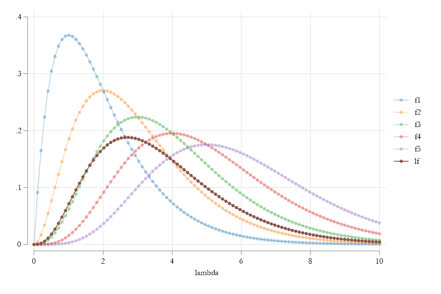

NLS, IRLS, and MLE
Going nonlinear!
So…what is non-linear?
Options:
\[ \begin{aligned} y = b_0 + b_1 x^{b_2}+e \\ y = exp(b_0+b_1 x)+e \\ y = exp(b_0+b_1 x+e) \\ y = h(x\beta)+e \\ y = h(x\beta+e) \end{aligned} \]
All of them are Nonlinear, but some of them are linearizable.
A Linearizable model is one you can apply a transformation and make it linear.
For models #2 and #4, you could apply (logs) or \(h^{-1}()\) (if functions), and use OLS. For the others you need other methods.
How do you do, NL?
Nonlinear models are tricky. In contrast with our good old OLS, there no “close form” solution we can plug in:
\[ \beta = (X'X)^{-1}X'y \]
We already saw this! For Quantile regressions, we never did it by-hand (requires linear programming). Because, Qregressions are also nolinear.
In this section, we will cover some of the few methodologies that are available for the estimation of Nonlinear models. We start with the first, an extension to OLS, we will call NLS.
\[ y = h(x,\beta) + e \]
What makes this model NLS, is that the error adds to the outcome (or CEF)! However, the CEF is modeled as a nolinear function of \(X's\) and \(\beta's\). (but we still aim to MIN SSR)
Some Assumptions
For identification and estimation NLS requires similar assumptions as OLS:
- Functional form: \(E(y|X)\) is given by \(h(x,\beta)\), which is continuous and differentiable.
- There is a unique solution! (like no-multicolinearity). if \(\beta\) Minimizes the errors, then there is no other \(\beta_0\) that will give the same solution.
- The expected value of the error is zero \(E(e)=0\), and \(E(e|h(x,\beta))=0\) . Similar to No endogeneity, but constrained by functional form.
- Data is well behaved. (no extreme distributions, so that mean and variance exists)
Under this assumptions, its possible to Estimate the coefficients of interest.
But How?
NLS aims to choose \(\beta's\) to minimize the sum of squared residuals:
\[ SSR(\beta) = \sum(y-h(x,\beta))^2 = [y-h(x,\beta)]'[y-h(x,\beta)] \]
The FOC of this model are a non-linear system of equations.
\[ \frac{\partial SSR(\beta)}{\partial \beta}=-2 \Bigg[\frac{\partial h(x,\beta)}{\partial \beta}\Bigg]' [y-h(x,\beta)] =-2\color{red}{\tilde X'} e \]
So how? Lets Start with a 2nd Order Taylor Expansion:
\[ \begin{aligned} SSR(\beta) &\simeq SSR(\beta_0) + g(\beta_0)' (\beta-\beta_0)+\frac{1}{2}(\beta-\beta_0)'H(\beta_0)(\beta-\beta_0) \\ g(\beta) &=-2 \tilde X'e ;H(\beta)=2 \tilde X'\tilde X ; \tilde X= \Bigg[\frac{\partial h(x,\beta)}{\partial \beta}\Bigg] \end{aligned} \]
FOC again..
\[ \begin{aligned} g(\beta_0)+H(\beta_0)(\beta-\beta_0)&=0 \\ \beta-\beta_0 &= -H(\beta_0)^{-1}g(\beta_0) \\ \beta_t &=\beta_{t-1}-H(\beta_{t-1})^{-1}g(\beta_{t-1}) \end{aligned} \]
This simply says, In order to solve the system, you need to use a recursive system, so that \(\beta's\) are updated until there is no longer a change.
This Iterative process is also known as a Newton Raphson method to solve nonlinear equations (if a solution exists).
Why does this work?
- You change \(\beta\) in the direction that should minimize SSR. (that direction is \(g(.,.)\).
- That get to that change the “fastest” way possible using the Hessian
This is the most basic numerical optimization method.
Small Example
Consider the function \(y = x^4 -18 x^2 + 15x\) , find the Minimum.
S1. Gradient: \(\frac{\partial y}{\partial x}=4x^3-36*x+15\)
S2. Hessian: \(\frac{\partial y ^2}{\partial^2 x}=12*x^2-36\)
Solution:
\[x_t = x_{t-1} - \frac{dy/dx}{dy^2/d^2x}\]
mata:
// function to obtain the Value, the gradient and Hessian
real matrix fgh_x(real matrix x, real scalar g){
real matrix y
if (g==0) y = -x:^4 :- 18*x:^2 :+ 15*x
else if (g==1) y = -4*x:^3 :- 36*x :+ 15
else if (g==2) y = -12*x:^2 :- 36
return(y)
}
// Some initial values
x = -2 , 2 ,0
xt = x,fgh_x(x,0),fgh_x(x,1)
for(i=1;i<8;i++) {
x = x :- fgh_x(x,1):/fgh_x(x,2)
xt = xt \ x,fgh_x(x,0),fgh_x(x,1)
}
xt[,(1,4,7)]
xt[,(2,5,8)]
xt[,(3,6,9)]
end
+----------------------------------------------+
1 | -2 -86 55 |
2 | -6.583333333 999.5046779 -889.2939815 |
3 | -4.746265374 30.78669521 -241.8115913 |
4 | -3.714313214 -113.7119057 -56.25720696 |
5 | -3.280073929 -127.1074326 -8.077091068 |
6 | -3.193322943 -127.4662895 -.2936080906 |
7 | -3.189923432 -127.4667891 -.0004426933 |
8 | -3.189918291 -127.4667891 -1.01177e-09 |
+----------------------------------------------+
1 2 3
+----------------------------------------------+
1 | 2 -26 -25 |
2 | 4.083333333 39.13430748 140.3356481 |
3 | 3.22806275 -30.56155349 33.34042084 |
4 | 2.853639205 -37.46140286 5.220655055 |
5 | 2.769051829 -37.6890608 .2425933896 |
6 | 2.764720715 -37.68958705 .0006229957 |
7 | 2.764709535 -37.68958705 4.14680e-09 |
8 | 2.764709535 -37.68958705 1.42109e-14 |
+----------------------------------------------+
1 2 3
+-------------------------------------------+
1 | 0 0 15 |
2 | .4166666667 3.155140818 .2893518519 |
3 | .4251979252 3.156376126 .0003663956 |
4 | .4252087555 3.156376128 5.98494e-10 |
5 | .4252087556 3.156376128 1.77636e-15 |
6 | .4252087556 3.156376128 0 |
7 | .4252087556 3.156376128 0 |
8 | .4252087556 3.156376128 0 |
+-------------------------------------------+Why So many Solutions?
Stata
NLS
The same principle (as above) can be used for Regression:
\[ y = b_0 + b_1 x ^{b_2} + e = h(x,b) + e \]
Pseudo Regressors and gradients
\[ \begin{aligned} \tilde X(b) = \frac{\partial h(x,b)}{\partial b_0}, \frac{\partial h(x,b)}{\partial b_1}, \frac{\partial h(x,b)}{\partial b_2} \\ \tilde X(b) = 1, x^{b_2},{b_1} x^{b_2}\ log\ b_2 \\ \beta_t =\beta_{t-1}-(\tilde X ' \tilde X) ^{-1} \tilde X' \hat e \\ \hat e=y-h(x,b_{t-1}) \end{aligned} \]
It turns out that:
\[ \begin{aligned} b^* \sim N(b, (\tilde X' \tilde X)^{-1}\tilde X' \Omega \tilde X (\tilde X' \tilde X)^{-1} )\\ \Omega = f(\hat e) \end{aligned} \]
So‚Ķyou can ü•™ just like with regular OLS!
NLS in Stata: Long Example
clear
set seed 101
set obs 100
** Generating fake data
gen x = runiform()
gen y = 1+0.5*x^0.5+rnormal()*.1
*** Load data in Mata...to make things quick
mata
x=st_data(.,"x")
y=st_data(.,"y")
end
mata
// Initial data
b=1\1\1
b0=999\999\999
bb=b'
// and a loop to see when data converges
while (sum(abs(b0:-b))> 0.000001 ) {
b0=b
// residuals
e=y:-(b[1]:+b[2]*x:^b[3])
// pseudo regressors
sx=J(100,1,1),x:^b[3],b[2]*x:^b[3]:*ln(x)
// gradient and Hessian
g=-cross(sx,e)
H=cross(sx,sx)
// updating B
b=b-invsym(H)*g
// Storing results
bb=bb\b'
}
/// Now STD ERR (for fun üòÉ )
vcv = e'e / (100-3) * invsym(H)
b , diagonal(vcv):^0.5
end
: b , diagonal(vcv):^0.5
1 2
+-----------------------------+
1 | 1.06407084 .0527603468 |
2 | .4228891942 .0477125017 |
3 | .5788053878 .159931095 |
+-----------------------------+NLS in Stata: Short Example: NL function
** Stata has the function -nl- (nonlinear)
** it can be used to estimate this types of models
** see help nl
** Be careful about Initial values
nl ( y = {b0=1} + {b1=1} * x ^ {b2=1})
Iteration 0: residual SS = .854919
Iteration 1: residual SS = .7742535
Iteration 2: residual SS = .766106
Iteration 3: residual SS = .7660948
Iteration 4: residual SS = .7660947
Iteration 5: residual SS = .7660947
Iteration 6: residual SS = .7660947
Source | SS df MS
-------------+---------------------------------- Number of obs = 100
Model | 1.2706842 2 .635342093 R-squared = 0.6239
Residual | .76609469 97 .007897883 Adj R-squared = 0.6161
-------------+---------------------------------- Root MSE = .08887
Total | 2.0367789 99 .020573524 Res. dev. = -203.3743
------------------------------------------------------------------------------
y | Coefficient Std. err. t P>|t| [95% conf. interval]
-------------+----------------------------------------------------------------
/b0 | 1.064071 .0527608 20.17 0.000 .9593554 1.168786
/b1 | .4228891 .0477129 8.86 0.000 .3281923 .517586
/b2 | .5788057 .1599306 3.62 0.000 .2613878 .8962236
------------------------------------------------------------------------------
Note: Parameter b0 is used as a constant term during estimation.So, you could now estimate many nonlinear models! (logits, probits, poissons, etc) or can you?
NLS for logit
The model (as NLS)
\[ P(y=1|x) = \frac{exp(x\beta)}{1+exp(x\beta)}+e \]
This guaranties the predicted value is between 0 and 1. But, still assumes errors are homoskedastic!
frause oaxaca, clear
nl (lfp = logistic({b0}+{b1:female age educ}))
Source | SS df MS
-------------+---------------------------------- Number of obs = 1,647
Model | 1272.8283 4 318.207079 R-squared = 0.8876
Residual | 161.17168 1643 .098095973 Adj R-squared = 0.8873
-------------+---------------------------------- Root MSE = .3132028
Total | 1434 1647 .870673953 Res. dev. = 845.9593
------------------------------------------------------------------------------
lfp | Coefficient Std. err. t P>|t| [95% conf. interval]
-------------+----------------------------------------------------------------
/b0 | 3.432866 .9601508 3.58 0.000 1.549617 5.316114
/b1_female | -3.056149 .8625563 -3.54 0.000 -4.747975 -1.364324
/b1_age | -.0205121 .0054815 -3.74 0.000 -.0312635 -.0097607
/b1_educ | .1522987 .0329513 4.62 0.000 .0876679 .2169296
------------------------------------------------------------------------------
logit lfp female age educ
Logistic regression Number of obs = 1,647
LR chi2(3) = 251.69
Prob > chi2 = 0.0000
Log likelihood = -508.42172 Pseudo R2 = 0.1984
------------------------------------------------------------------------------
lfp | Coefficient Std. err. z P>|z| [95% conf. interval]
-------------+----------------------------------------------------------------
female | -3.21864 .365329 -8.81 0.000 -3.934672 -2.502609
age | -.0233149 .0072746 -3.20 0.001 -.0375729 -.0090569
educ | .1719904 .0411498 4.18 0.000 .0913383 .2526425
_cons | 3.507185 .6550208 5.35 0.000 2.223367 4.791002
------------------------------------------------------------------------------GLM and Interative Reweighted LS (IRLS)
Generalized Linear Model are a natural extension to LR models. It changes how LR models are estimated.
- Puts more emphasis in modeling the CEF (conditional mean) of the distribution
- Allows for different transformations that relate the index \(xb\) to \(E(y|x)\) (links)
- Considers data can come from different distributions. ( family )
\[ E(y|X) = \eta ^{-1}(x\beta) ; Var(E(y|X)) = \sigma^2(x) \]
For example:
Logit model: Family \(\rightarrow\) binomial, Link function logistic function is logistic \(p(y|x) = \frac {e^{x\beta} }{1+e^{x\beta}} \rightarrow x\beta=log \left( \frac{p}{1-p} \right)\)
Family: Binomial, so variance is given by \(Var(y|X) = p(y|x)(1-p(y|x))\)
How does this change Estimation? NLS??

Fusion
How does this change Estimation? NLS??
Recall GLS?
Heteroskedasticity was addressed by either using “weights” to estimate the model, or by transforming the data!
Here, when we choose a family, we are also choosing a particular source of heteroskedasticy. (Logit, probit, poisson, have very specific heteroskedastic errors)
Thus, you just need to apply NLS to transformed data!
\[ \begin{aligned} SSR(\beta) = \sum \left( \frac{y-h(x,\beta)}{\sigma(x,\beta)} \right)^2 \\\ \tilde X = \frac{1}{\sigma(x,\beta)} \frac{\partial h(x,\beta)}{\partial \beta} ; \tilde y = \frac{y}{\sigma(x,\beta)} ; \tilde e=\frac{1}{\sigma(x,\beta)}(y-h(x,\beta)) \end{aligned} \]
How does this change Estimation? NLS??
Then, just apply the iterative process we saw before, until it converges!
\[ \beta_t =\beta_{t-1}-(\tilde X'\tilde X)^{-1} (\tilde X' \tilde e) \]
Then simply derive Standard errors from here.
frause oaxaca, clear
nl (lfp = logistic({b0}+{b1:female age educ}))
logit lfp female age educ
** IRSL
gen one =1
mata
y = st_data(.,"lfp")
x = st_data(.,"female age educ one")
b = 0\0\0\0
end
mata:
b0=999\999\999\999
bb=b'
while (sum(abs(b0:-b))> 0.000001 ) {
b0=b
yh = logistic(x*b)
err = y:-yh
se = sqrt(yh:*(1:-yh))
wsx = yh:*(1:-yh):*x:/se
werr= err:/se
g = -cross(wsx,werr)
h = cross(wsx,wsx)
b = b:-invsym(h)*g;b'
}
b,diagonal(cross(werr,werr)/1643*invsym(h)):^.5
end
+-------------------------------+
1 | -3.218640936 .3458501096 |
2 | -.0233149268 .0068867539 |
3 | .1719904055 .0389557282 |
4 | 3.507185231 .6200958697 |
+-------------------------------+GLM in Stata
This one is easy as ü•ß
help glm
* see for advanced options if interested
* syntax
glm y x1 x2 x3 , family( family ) link(function) method
frause oaxaca
glm lfp female age educ, family(binomial) link(probit)
glm lfp female age educ, family(binomial) link(identity)
glm lfp female age educ, family(binomial) link(logit)
Generalized linear models Number of obs = 1,647
Optimization : ML Residual df = 1,643
Scale parameter = 1
Deviance = 1016.84343 (1/df) Deviance = .6188944
Pearson = 1472.464769 (1/df) Pearson = .896205
Variance function: V(u) = u*(1-u) [Bernoulli]
Link function : g(u) = ln(u/(1-u)) [Logit]
AIC = .6222486
Log likelihood = -508.4217152 BIC = -11152.38
------------------------------------------------------------------------------
| OIM
lfp | Coefficient std. err. z P>|z| [95% conf. interval]
-------------+----------------------------------------------------------------
female | -3.218641 .365329 -8.81 0.000 -3.934672 -2.502609
age | -.0233149 .0072746 -3.20 0.001 -.0375729 -.0090569
educ | .1719904 .0411498 4.18 0.000 .0913383 .2526425
_cons | 3.507185 .6550209 5.35 0.000 2.223368 4.791002
------------------------------------------------------------------------------Going full ML
(Maximum Likelihood not Machine Learning!)
What is MLE
MLE is an estimation method that allows you to find asymptotically efficient estimators of the parameters of interest \(\beta's\).
How?
Under the assumption that you know something about the data conditional distribution, MLE will find the set of parameters that maximizes the probability (likelihood)that data “comes” from the chosen distribution.
ok….but HOW???
Lets do this by example
Poisson Regression via MLE
Consider variable \(y={1,1,2,2,3,3,3,3,4,5}\)
And say, we assume it comes from a poisson distribution:
\[ p(y|\lambda) = \frac{e^{-\lambda} \lambda ^y}{y!} \]
This function depends on the value of \(\lambda\) .
When \(\lambda\) is known, this is the probability \(y=\#\), assuming a poisson distribution.
When \(\lambda\) is unknown, this function (now \(f(y|\lambda)\) gives the likelihood that we observe \(y=\#\) , for any given \(\lambda\).
The Likelihood of \(\lambda\)

Previous figure only considers the likelihood function of a single observation. And every curve suggests its own parameter. (care to guess?)
What if we want one that Maximizes the likelihood of ALL observations at once!. For this we need to impose an additional assumption: Independent distribution.
This means that JOINT density is defined as:
\[ L(\lambda|y_1,y_2,...,y_{10})=\prod f(y_i|\lambda) \]
The Likelihood of \(\lambda\)
What MLE does
What MLE does, then, is to find the parameter \(\lambda\) that maximizes the Joint probability of observing the dataset \(Y\). Simple as that….
With one more difference. Because products are Hard, MLE aims to maximize the Log-Likelihood of observing the data:
\[ \begin{aligned} LnL(\lambda|y_1,y_2,...,y_{10}) &=\sum ln f(y_i|\lambda) \\\ &= \sum (-\lambda + y_i ln(\lambda) - ln(y_i!)) \end{aligned} \]
And just two more changes.
- When you have \(X's\), you can further modify this model, to allow for covariates. For example:
\[ \lambda = e^{x\beta} \]Which guaranties the mean, or more specifically conditional mean \(\lambda = E(y|X)\) , is positive.
- We divide LnL by \(N\). (Number of observations)
\[ \begin{aligned} \beta = \min_\beta LnL(\beta|Y,X) \\ \beta = \min_\beta \frac{1}{N}\sum -e^{x'\beta}+y_i x_i'\beta - ln(y_i!) \end{aligned} \]
Which arrives to the Same solution
How to solve this?
We actually already covered this…We use Iterative methods!
\[ \begin{aligned} LL &= \sum ln \ f(y|x,\beta) \\ FOC&: \\ \frac{\partial LL}{\partial \beta}&= \sum \frac{\partial ln \ f(y|x,\beta)}{\partial \beta} = \sum g_i=n E[g_i] =0 \\ SOC&: \\ \frac{\partial^2 LL}{\partial \beta \partial \beta'}&= \sum\frac{\partial^2 ln f(y|x,\beta)}{\partial \beta \partial \beta'} =\sum H_i = n E(H_i) \end{aligned} \]
Thus, \(\beta's\) can be estimated using the iterative process (or other more efficient process)
\[ \beta_t = \beta_{t-1} - E(H)^{-1} E(g_i) \]
Why do we like MLE?
Properties of MLE:
The estimates are consistent \(plim \ \hat \theta = \theta\)
Its MLE estimates are asymptically normal \(\hat \theta\sim N(\theta,\sigma^2_\theta)\)
And asymptotically efficient (smallest variance)
Wait…What about Variances? How do you estimate them!
Regularity Conditions and MLE ⚠️
The variance of estimated coefficients has three estimators for its variance:
- We can ü•™(Sandwich) the variance:
\[ Var\left(N^{-1/2}(\hat\beta - \beta) \right) = H^{-1}g'gH^{-1} = A^{-1}BA^{-1} \]
- Or you can use of of the following: \[ \begin{aligned} Var\left(N^{-1/2}(\hat\beta - \beta) \right) = -H^{-1} \\ Var\left(N^{-1/2}(\hat\beta - \beta) \right) = \left(\frac{1}{N}\sum g_i g_i'\right)^{-1} \end{aligned} \]
But if all is well (Regularity conditions), They are all equivalent. Otherwise Opt1 is similar to HC1, and Option 2a is closer to non-robust Standard Errors
Regularity Conditions ⚠️
- The LogLikelihood function is build on a well behaved distribution function. Which implies FOC:
\[ \begin{aligned} \int f(y|\theta) dy =1 \\ \int \frac{\partial f(y|\theta)}{\partial \theta}dy=\int \frac{\partial ln f(y|\theta)}{\partial \theta} f(y|\theta)=0 \\ E(g_i)=0 \end{aligned} \]
- Order of Diff and Integration is interchangeable. We obtain SOC: \[ \int \left( \frac{\partial^2 ln f(y|\theta)}{\partial \theta \partial \theta'}f(y|\theta) + \frac{\partial ln f(y|\theta)}{\partial \theta} \frac{\partial ln f(y|\theta)}{\partial \theta'} \right)dy = 0 \\ E(H_i) = -E(g_ig_i') \]
LR as MLE
Under the assumption of normality, LR can be estimated using ML:
\[y_i = x_i'\beta + e_i \ | \ e_i\sim N(0,\sigma^2) \rightarrow y|x \sim N(x'\beta, \sigma^2) \]
How does the MLE look? \[ \begin{aligned} L_i = f(y_i|x_i,\beta,\sigma^2) = \frac{1}{ \sqrt{2\pi \sigma^2 }} e^{-\frac{1}{2} \frac{ (y_i-x_i'\beta)^2}{\sigma^2} } \\ LL_i = -\frac{1}{2}\frac{(y_i-x_i'\beta)^2}{\sigma^2} - \frac{1}{2}ln(2\pi)-\frac{1}{2}ln(\sigma^2) \end{aligned} \]
Total LL?
\[ LL = -\frac{1}{2\sigma^2} \sum (y_i-x_i'\beta)^2-\frac{N ln(2\pi)}{2}-\frac{N}{2} ln(\sigma^2) \]
LR as MLE PII
FOC:
\[ \begin{aligned} \frac{\partial LL}{\partial \beta} = -\frac{1}{\sigma^2}\sum x'(y_i-x'\beta)=0 \rightarrow \hat\beta=(X'X)^{-1}X'y \\ \frac{\partial LL}{\partial \sigma^2} = \frac{\sum e^2}{2\sigma^4}-\frac{N}{2\sigma^2}=0 \rightarrow \hat \sigma^2 = \frac{\sum e^2}{N} \end{aligned} \]
SOC:
\[ \begin{aligned} \frac{\partial^2 LL}{\partial \beta \partial \beta'} = - \frac{X'X}{\sigma^2} ; \frac{\partial^2 LL}{\partial \beta \partial \sigma} = - \frac{X'y-X'X\beta }{\sigma^2} \\ \frac{\partial^2 LL}{\partial \sigma \partial \beta'}=0; \frac{\partial^2 LL}{\partial \sigma ^2}=-\frac{\sum e^2}{\sigma^6}+\frac{N}{2\sigma^4}=-\frac{N}{2\sigma^4} \end{aligned} \]
SOC
\[ \begin{aligned} H = \Bigg[\begin{matrix} -\frac{X'X}{\sigma^2}& 0 \\ 0 & -\frac{N}{2\sigma^4} \end{matrix} \Bigg] \\ & \rightarrow Var(\beta,\sigma^2)=-H^{-1}= \Bigg[\begin{matrix} \sigma^2 (X'X)^{-1} & 0 \\ 0 & \frac{2\sigma^4}{N} \end{matrix} \Bigg] \end{aligned} \]
Other considerations
MLE is consistent if the model is correctly Specified.
This means that one correctly specifies the conditional distribution of \(y\).
- Often, its possible to especify the CEF, but specify the variance correctly, may be difficult
Usually, this would be grounds of inconsistency. However if the distribution function is part of the exponential family (normal, bernulli, poisson, etc), one only needs to correctly specify the CEF correctly!
In this case, the model is no longer estimated using MLE but QMLE
In this cases, use Robust!
MLE in Stata
Many native commands in Stata actually estimate models using MLE on the background.
- logit; probit; poisson; ologit; mlogit, etc
Some multiple equation models as well.
movestay,craggit,ky_fit
Are just a few user written commands that also rely on MLE.
So how do you estimate this models?
you do it by hand!
This is the way
Programming MLE
Stata has one feature that would allow you to estimate almost any model via MLE. the -ml- suit.
This has many levels of programming (lf, d0, d1, d2, etc), but we will concentrate on the easiest one : lf (linear function)
- This only requires you to provide the individual level likelihood function!
But how do we start?
You need three pieces of information:
- Identify distribution or objective function to maximize.
- Identify the parameters that the distribution depends on, and how will they be affected by characteristics
- If more than one equation exists, Identify possible connections across variables
- Wrap it all in a program
For details on a few examples see Rios-Avila & Canavire-Bacarreza 2018
Programming MLE PI
OLS via MLE:
\(y\) distributes as normal distribution, which depends on the mean \(\mu\) and variance \(\sigma^2\). We assume that only the mean depends on \(X\).
** Define Program
capture program drop my_ols
program define my_ols
args lnf /// <- Stores the LL for obs i
xb /// <- Captures the Linear combination of X's
lnsigma // <- captures the Log standard error
** Start creating all aux variables and lnf
qui {
tempvar sigma // Temporary variable
gen double `sigma' = exp(`lnsigma')
tempvar y
local y $ML_y1
replace `lnf' = log( normalden(`y',`xb',`sigma' ) )
}
endNow Just Call on the program
* load some data
frause oaxaca, clear
ml model lf /// Ask to use -ml- to estimate a model with method -lf-
my_ols /// your ML program
(xb: lnwage = age educ female ) /// 1st Eq (only one in this case)
(lnsig: = female ) // Empty, (no other Y, but could add X's)
// I could haave added weights, or IF conditions
ml check // checks if the code is correct
ml maximize // maximizes
ml display // shows results
* Short version
ml model lf my_ols /// Model and method
(xb: lnwage = age educ female) (lnsig: = female ) /// model Parms
, robust maximize // Other SE options, and maximize
ml display
Number of obs = 1,434
Wald chi2(3) = 393.05
Log pseudolikelihood = -870.41117 Prob > chi2 = 0.0000
------------------------------------------------------------------------------
| Robust
lnwage | Coefficient std. err. z P>|z| [95% conf. interval]
-------------+----------------------------------------------------------------
xb |
age | .0177272 .0012221 14.51 0.000 .015332 .0201224
educ | .0685501 .0056712 12.09 0.000 .0574347 .0796655
female | -.1487184 .0247333 -6.01 0.000 -.1971948 -.1002421
_cons | 1.949072 .0888074 21.95 0.000 1.775012 2.123131
-------------+----------------------------------------------------------------
lnsig |
female | .3440266 .0691673 4.97 0.000 .2084611 .479592
_cons | -.9758137 .0488944 -19.96 0.000 -1.071645 -.8799825
------------------------------------------------------------------------------
. reg lnwage age educ female
Source | SS df MS Number of obs = 1,434
-------------+---------------------------------- F(3, 1430) = 167.12
Model | 104.907056 3 34.9690188 Prob > F = 0.0000
Residual | 299.212747 1,430 .209239683 R-squared = 0.2596
-------------+---------------------------------- Adj R-squared = 0.2580
Total | 404.119804 1,433 .282009633 Root MSE = .45743
------------------------------------------------------------------------------
lnwage | Coefficient Std. err. t P>|t| [95% conf. interval]
-------------+----------------------------------------------------------------
age | .0161424 .0010978 14.70 0.000 .013989 .0182959
educ | .0719322 .0050365 14.28 0.000 .0620524 .081812
female | -.1453936 .0243888 -5.96 0.000 -.1932352 -.097552
_cons | 1.970021 .0725757 27.14 0.000 1.827654 2.112387
------------------------------------------------------------------------------Other Considerations
With MLE, as with logit probit tobit, etc, you cannot interpret the models directly!
Then what?
Identify what is the Statistic of interest (most of the time its the expected value, conditional mean, or predicted mean). But others may be something related to other parameters (we care about \(\sigma\) not \(ln \ \sigma\)).
See
margins, and optionexpressionIdentify if you are interested in Average effects, or effects at the average.
Some times, you may need to use your own predictions!
Margins in action
**Estimate Logit model
logit lfp educ female age married divorced
** use margins to estimate predicted probability
margins
** or use expression
margins, expression(exp(xb())/(1+exp(xb())))
------------------------------------------------------------------------------
| Delta-method
| Margin std. err. z P>|z| [95% conf. interval]
-------------+----------------------------------------------------------------
_cons | .870674 .0071023 122.59 0.000 .8567537 .8845942
------------------------------------------------------------------------------
** marginal effects
margins, dydx(educ)
------------------------------------------------------------------------------
| Delta-method
| dy/dx std. err. z P>|z| [95% conf. interval]
-------------+----------------------------------------------------------------
educ | .0161004 .0037127 4.34 0.000 .0088236 .0233772
------------------------------------------------------------------------------
** Marginal effect of the marginal effect?
margins, expression( logistic(xb())*(1-logistic(xb()))*_b[educ] )
------------------------------------------------------------------------------
| Delta-method
| Margin std. err. z P>|z| [95% conf. interval]
-------------+----------------------------------------------------------------
_cons | .0161004 .0037127 4.34 0.000 .0088236 .0233772
------------------------------------------------------------------------------
margins, dydx(*) expression( logistic(xb())*(1-logistic(xb()))*_b[educ] )
------------------------------------------------------------------------------
| Delta-method
| dy/dx std. err. z P>|z| [95% conf. interval]
-------------+----------------------------------------------------------------
educ | -.0010759 .0004973 -2.16 0.031 -.0020507 -.0001012
1.female | .0246023 .0054734 4.49 0.000 .0138747 .0353299
age | 5.41e-06 .0000502 0.11 0.914 -.000093 .0001039
1.married | .021062 .004861 4.33 0.000 .0115346 .0305893
1.divorced | .0037604 .0013899 2.71 0.007 .0010362 .0064846
------------------------------------------------------------------------------Going Beyond?
MLE can also be used in more Advanced models.
Multi equation model that may or may not depend on each other.
For example, Oaxaca-Blinder Decomposition, requires using Multiple Equations
IV - CF, or IV TSLS are also multi equation models but which depend on each other.
One could also estimate nonlinear versions of Standard models. For example Nonlinear Tobit model (See Ransom 1987)
Estimation of latent groups of finite mixture models . This combine models that are otherwise unobserved (See Kapteyn and Ypma 2007)
Basically, if you can figure out \(f(.)\)’s and how are they connected, you can estimate any model via MLE (with few exceptions)
Done!
Next, we start with Causal effects Strategies. First the gold Standard RCT